Introduction à la toxicologie industrielle
La toxicologie industrielle étudie les effets nocifs des substances chimiques rencontrées au travail. Elle s'articule autour de l'équation R = D x E (Risque = Danger x Exposition) et exploite la dose-réponse héritée de Paracelse : « seule la dose fait le poison ». En mine, elle prend tout son sens face à la silice, aux gaz d'échappement diesel, aux fumées de tirs et aux métaux des gisements.
Table des matières
- Équation du risque
- Définitions de base
- Sources de données toxicologiques
- Applications occupationnelles
- Fonctionnement du corps humain
- Application terrain
- Ressources
Équation du risque
R = D x E
| Composante | Sens | Caractéristique |
|---|---|---|
| Danger (D) | Dommage potentiel d'un produit | Intrinsèque, ne s'élimine pas sauf en retirant la substance |
| Exposition (E) | Mise en contact concrète (durée, fréquence, voie, EPI) | Modulable par les moyens de contrôle |
| Risque (R) | Probabilité d'un préjudice | Se gère en agissant sur l'exposition |
| En hygiène du travail, on évalue surtout E (voir Démarche AREC). En toxicologie, on caractérise D. |
{kind=link}
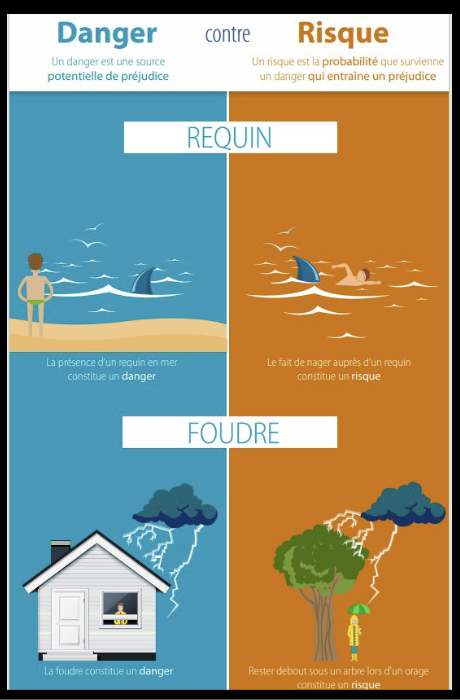
Toucher l'image pour l'agrandirLa notion de risque comme combinaison de probabilité d'occurrence et de gravité.
Définitions de base
- Toxicologie : science qui étudie les effets nocifs des substances chimiques sur les organismes vivants. Du grec toxicon (flèche empoisonnée).
- Poison / toxique : substance perturbant le fonctionnement normal d'un organisme. Source naturelle (pollen, aflatoxine) ou artificielle (urée-formaldéhyde), chimique ou biologique.
- Paracelse (1493-1541) : père de la toxicologie moderne, Sola dosis facit venenum. Voir la relation dose-réponse.
- Toxicologie industrielle : sous-discipline traitant des substances chimiques du milieu de travail. Identifie les agents nocifs, surveille les travailleurs, fixe les limites d'exposition.
Les substances chimiques au travail couvrent une large gamme de produits, naturels comme artificiels, organiques comme inorganiques.
{kind=link}
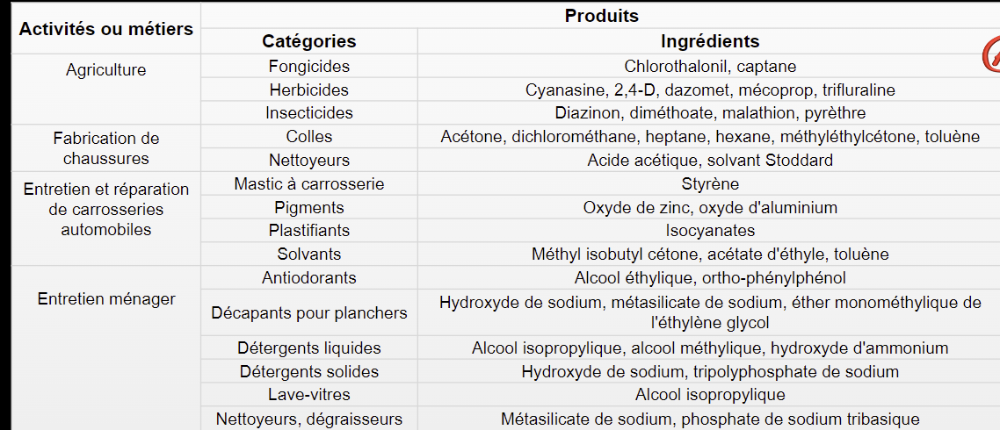
Toucher l'image pour l'agrandirSources de données toxicologiques
| Type d'étude | Atouts | Limites |
|---|---|---|
| Épidémiologie | Données humaines réelles, en milieu de travail | Biais, facteurs confondants, latence |
| Volontaires (chambre ou cohorte) | Conditions humaines contrôlées | Éthique, faibles doses seulement |
| Animaux (aigu < 24 h, subchronique < 90 j, chronique 6-24 mois) | Doses, voies, mécanismes contrôlés | Extrapolation interspécifique difficile |
| Résultat clé visé : la relation dose-réponse. Voir Toxicité, dose-réponse et DL50. |
Applications occupationnelles
Normes d'exposition dans l'air
- Québec : annexe I du RSST (s-2.1, r.13).
- USA : OSHA 29 CFR 1910.1000 ; ACGIH TLV.
- Canada fédéral : RCSST.
- Types de normes : VEMP (moyenne 8h), VECD (court terme 15 min), Plafond, limites d'excursion.
Surveillance biologique (IBE)
Les indicateurs biologiques d'exposition mesurent la dose interne absorbée (sang, urine, air expiré). Ils complètent l'échantillonnage de l'air (dose externe). Exception notable : pour le plomb, l'IBE provient des effets sur la santé, pas de l'extrapolation depuis l'air.
{kind=link}
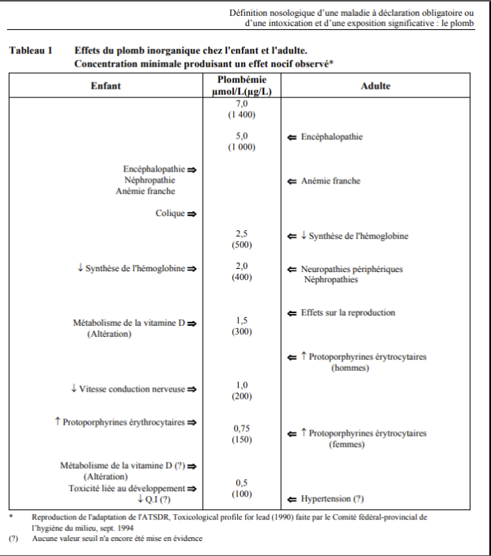
Toucher l'image pour l'agrandirMADO / IADO
Maladies à déclaration obligatoire (Loi sur la santé publique, 2001). Plusieurs maladies professionnelles toxicologiques (silicose, amiantose, intoxication au plomb) y figurent.
{kind=link}
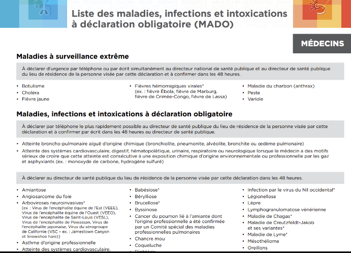
Toucher l'image pour l'agrandirFonctionnement du corps humain
Niveaux d'organisation étudiés en toxicologie : chimique → cellulaire → tissulaire → organe → système → organisme.
{kind=link}
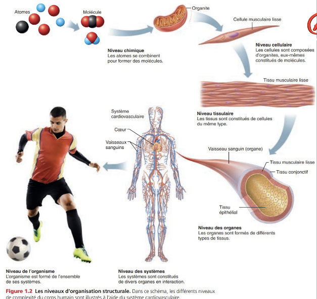
Toucher l'image pour l'agrandirComposition chimique
6 éléments = 99 % de la masse corporelle : O, C, H, N, Ca, P.
{kind=link}
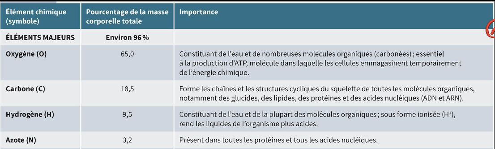
Toucher l'image pour l'agrandir- Molécule organique : contient C-H (lipides, protéines, glucides, ADN).
- Molécule inorganique : sans liaison C-H (CO, CO2, cyanures, Métaux toxiques en milieu de travail, silicates).
{kind=link}
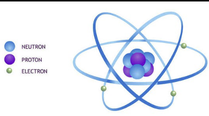
Toucher l'image pour l'agrandir{kind=link}
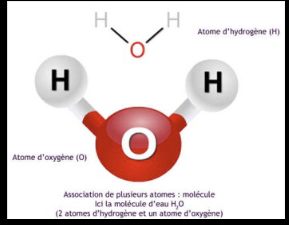
Toucher l'image pour l'agrandirMembrane cellulaire et compartiments
La membrane cellulaire est une bicouche phospholipidique (milieu hydrophobe). Le passage des contaminants dépend de la liposolubilité, voir ADME, cheminement des contaminants dans l'organisme.
{kind=link}
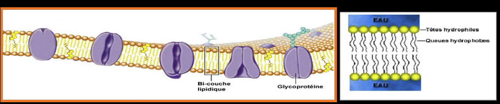
Toucher l'image pour l'agrandirLe franchissement des membranes peut se faire à travers la bicouche pour les molécules liposolubles, ou via les protéines membranaires.
{kind=link}
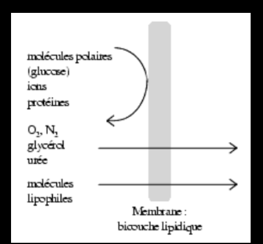
Toucher l'image pour l'agrandir{kind=link}
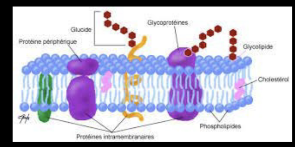
Toucher l'image pour l'agrandirL'organisme est composé de plusieurs compartiments hydriques (intracellulaire, interstitiel, plasmatique) qui modulent la distribution des contaminants.
{kind=link}
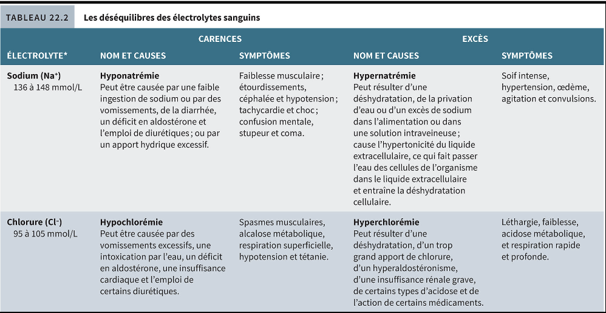
Toucher l'image pour l'agrandirTissus et homéostasie
- Tissus : épithélial (barrière et sécrétion), conjonctif, musculaire, nerveux.
- Homéostasie : équilibre dynamique (pH, glycémie, hydratation, température). Les toxiques perturbent ces mécanismes de régulation.
Application terrain
Le milieu minier concentre plusieurs sources de contaminants chimiques
| Source | Contaminants typiques |
|---|---|
| Forage et abattage | Toxicité du système respiratoire, poussières de roche |
| Sautage | Asphyxiants simples et chimiques des sulfures |
| Équipement diesel souterrain | Gestion des moteurs diesel sous terre, NO2, CO, Mutagénicité et cancérogénicité |
| Soudage en atelier | Fumées métalliques (Métaux toxiques en milieu de travail) |
| Bâtiments anciens, mécanique | Amiante (calorifuges, garnitures) |
| Atelier et entretien | Solvants (dégraissage, peinture) |
| Gisements particuliers | Métaux toxiques en milieu de travail |
| La démarche en mine consiste à caractériser D pour chaque procédé et à maîtriser E par la ventilation souterraine, les cabines pressurisées, les Protection respiratoire (APR) et les procédures (délais de réentrée post-tir, forage humide). |
Ressources
| Document | Type | Source |
|---|---|---|
| RSST (VEMP - Valeur d'exposition moyenne pondérée, notations) | Règlement | LégisQuébec |
| ACGIH TLV’S - Threshold Limit Values | Référentiel | ACGIH (annuel) |
| Fiches toxicologiques | Fiches | IRSST, INRS, NIOSH |
| MADO et IADO | Guide | INSPQ |
| Articles wiki connexes |
Pages qui pointent ici (14)
- 🎯 Démarrage rapide, conseiller SST Toxicologie
- 🎯 Démarrage rapide, direction et RH Toxicologie
- 🎯 Démarrage rapide, superviseur Toxicologie
- 🎯 Démarrage rapide, travailleur Toxicologie
- 🏠 Wiki Toxicologie, mines Toxicologie
- ADME, cheminement des contaminants dans l'organisme Toxicologie
- Ergonomie (définition) Ergonomie
- Évaluation et priorisation chimique Toxicologie
- Outils de priorisation des risques chimiques Hygiène industrielle
- Outils de priorisation des risques chimiques Toxicologie
- Reconnaître une exposition Hygiène industrielle
- Reconnaître une exposition Toxicologie
- Toxicocinétique Toxicologie
- Toxicologie clinique Toxicologie